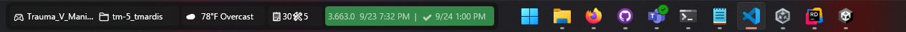

Traycer HUD Documentation
Welcome to the Traycer HUD documentation set. These pages cover the essentials for installing, configuring, and extending the Traycer overlay.
- Getting Started – install the HUD, configure the defaults file, and learn tray controls.
- IPC JSON Protocol – reference the messages available over the named pipe.
- Defaults Configuration – understand how Traycer discovers and parses
traycer.defaults.json. - Background Tasks – manage scheduled and one-off jobs controlled through the tray.
- Custom Script Tutorial – build timer jobs and long-lived daemons that push well updates.
- API Reference – explore public types generated from the codebase.
Need something that is not covered here? Open an issue or contribution proposal in the repository.